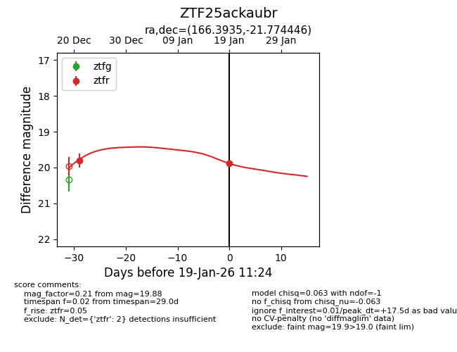
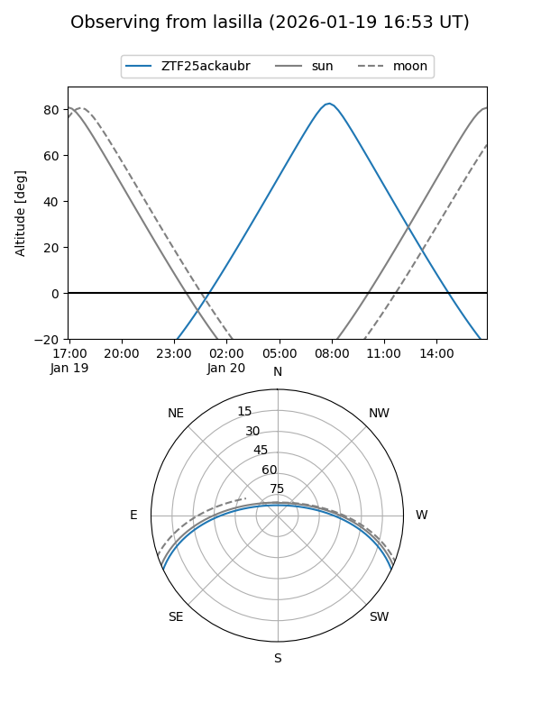
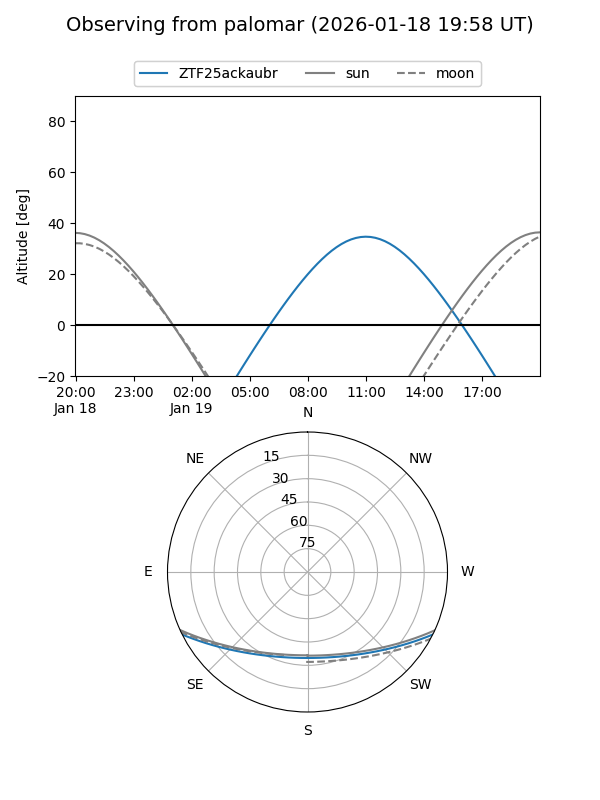
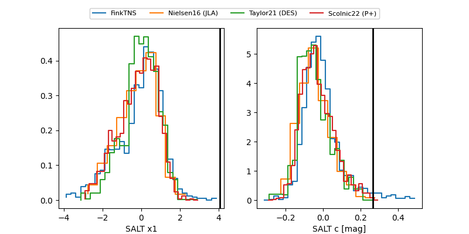

ZTF25ackaubr
Target ZTF25ackaubr at 2026-01-19 11:25
Aliases and brokers:
FINK: link
Lasair: link
ALeRCE: link
alt names
ZTF25ackaubr (ztf,fink_ztf)
Coordinates:
equatorial (ra, dec) = 166.3935,-21.77445
equatorial (HMS+DMS) = 11:05:34.43,-21:46:28.01
galactic (l, b) = (272.6659,+34.80065)
Flags:
Photometry:
last ztfr=19.88
2 ztfr detections
Lightcurve

Visibility


Additional plots
